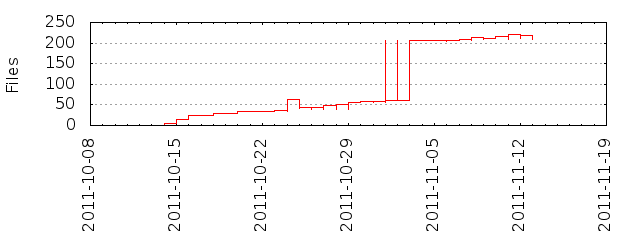

Files
- Total files
- 209
- Total lines
- 50351
- Average file size
- 12655.65 bytes

| Extension | Files (%) | Lines (%) | Lines/file |
|---|
| 10 (4.78%) | 115 (0.23%) | 11 |
| c | 1 (0.48%) | 51 (0.10%) | 51 |
| conf | 1 (0.48%) | 18 (0.04%) | 18 |
| css | 1 (0.48%) | 29 (0.06%) | 29 |
| dia | 1 (0.48%) | 5464 (10.85%) | 5464 |
| gif | 1 (0.48%) | 0 (0.00%) | 0 |
| html | 142 (67.94%) | 35880 (71.26%) | 252 |
| jar | 1 (0.48%) | 1689 (3.35%) | 1689 |
| java | 32 (15.31%) | 7138 (14.18%) | 223 |
| png | 1 (0.48%) | 5 (0.01%) | 5 |
| prefs | 5 (2.39%) | 514 (1.02%) | 102 |
| reg | 2 (0.96%) | 10 (0.02%) | 5 |
| sh | 2 (0.96%) | 23 (0.05%) | 11 |
| txt | 1 (0.48%) | 51 (0.10%) | 51 |
| xcf | 1 (0.48%) | 175 (0.35%) | 175 |
| xml | 7 (3.35%) | 1063 (2.11%) | 151 |